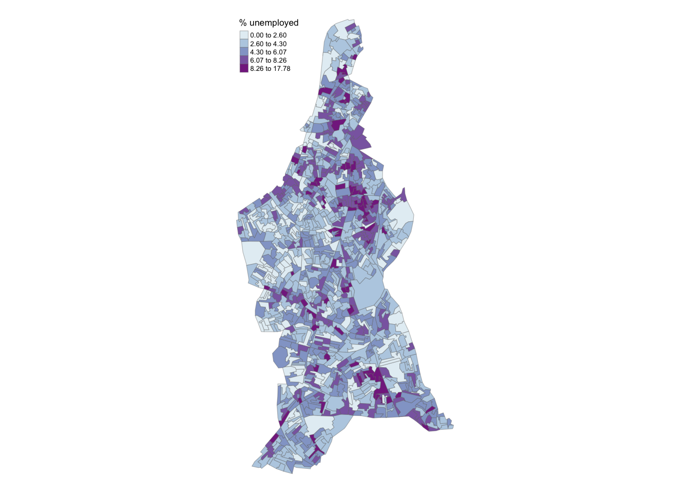
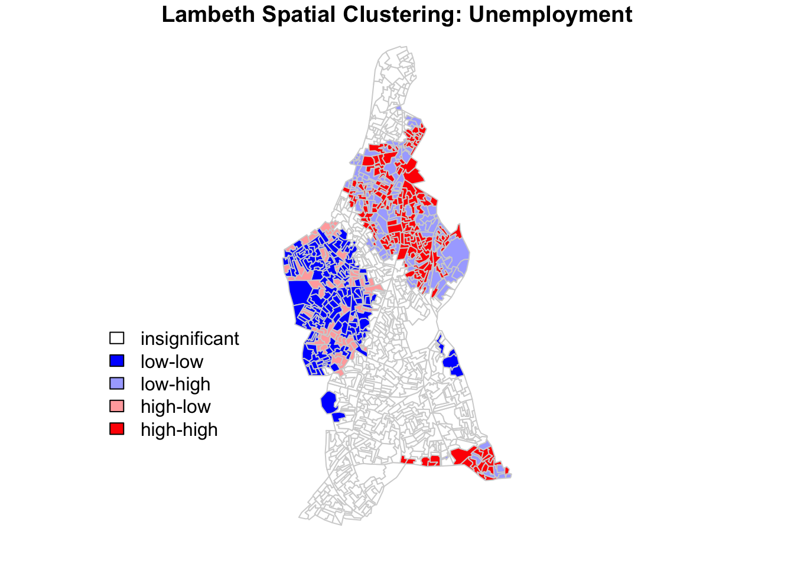
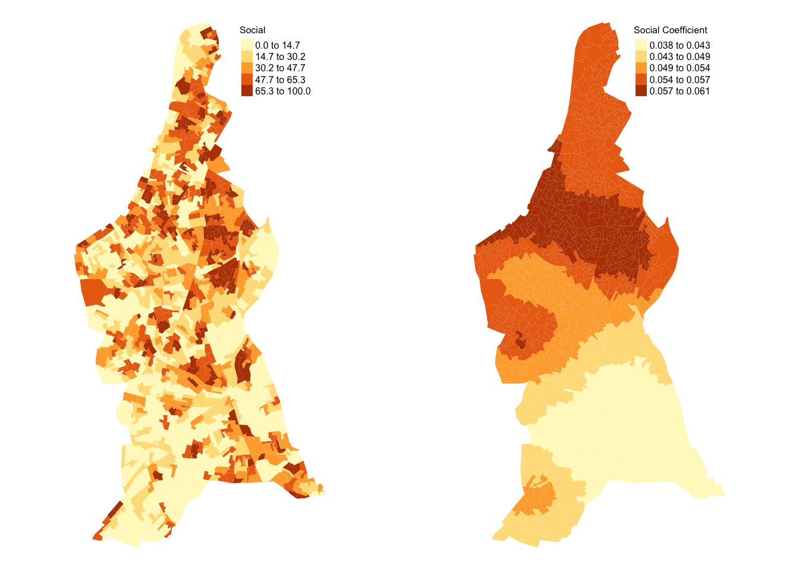
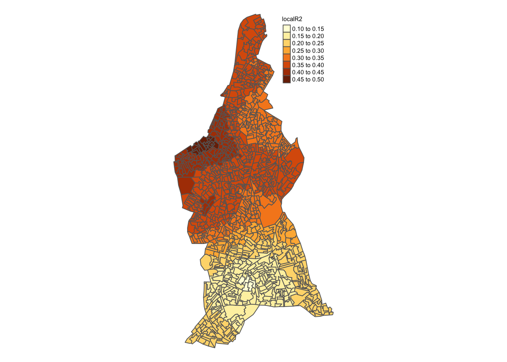
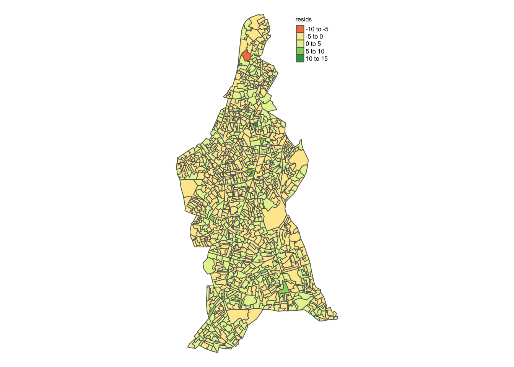

Report of unemployment in Lambeth
Executive Summary:
This report looks at the geography of unemployment within Lambeth, there are significant clusters of high unemployment in the North East region which also seem to be where there is a higher concentration of social housing. Upon investigating further, there is a positive relationship between the presence of social housing and unemployment in this region. Policy makers should target this area and implement strategies such as mixed-income development to reduce unemployment.
The report uses variables from the 2021 UK census data (see appendix) and is at output area (OA) level.
The map above presents an overview of the geography of unemployment within the borough, with darker shades indicating higher levels of unemployment. At first glance, it seems like the majority of the borough sees 2.60% to 6.07% of unemployment, however we can small pockets of high unemployment in the North East and South East region as well as low unemployment in the Western region. To investigate this further, LISA maps were created as shown below.

The map reveals patterns of spatial autocorrelation in the North East, South East, and Western regions, where clusters of both positive and negative spatial autocorrelation are present. Positive clusters, indicated as HIGH-HIGH, represent areas with high unemployment surrounded by similarly high levels, while LOW-LOW clusters signify areas with low unemployment surrounded by similarly low levels. Negative clusters, such as LOW-HIGH, are areas of low unemployment close to high unemployment areas, and HIGH-LOW clusters are areas of high unemployment surrounded by low unemployment areas.
These clusters are not randomly dispersed but form identifiable patterns, with the North East showing moderately sized red clusters of high unemployment interspersed with light blue clusters, suggesting that although there are some areas with high levels of unemployment, there are areas closeby that see a very mixed level of unemployment. A similar pattern emerges in the West, where dark blue clusters of low unemployment are interspersed with areas of mixed employment levels showing abrupt transitions between high and low unemployment.
To gain more insight into these clusters and disparities, we will use another variable, social housing.

The left map shows the distribution of social housing in Lambeth; when looking at it with the LISA map, we can see that the red areas (high unemployment close to similar levels) have higher levels of social housing in those clusters. The same goes for the regions in the south of Lambeth. In the Western region, we can see that the dark blue areas (low unemployment close to similar levels) see less social housing. However there are still noticeable pockets of high social housing in the region which may be one of the causes for the negative spatial autocorrelation of unemployment, and vice versa for the North Eastern and Southern regions.
The right map shows the impact of social housing on unemployment in different areas, the darker orange areas have a stronger positive relationship, meaning that the impact of social housing on higher unemployment rates is strongest here. Noticeably, the darkest areas (0.054 to 0.061) are the areas with high levels of unemployment and social housing, therefore policy makers should focus on the areas that identify with the red HIGH-HIGH clusters, particularly those in the North East and less so in the South East. One reason why those in the South East may not see as much correlation despite having similar amounts of social housing and unemployment is because it is close to the border of Croydon, which may see vastly different characteristics to those in Lambeth, therefore other factors may play a larger role in shaping unemployment there.
Below is a map that shows the R-squared values for the GWR model; it seems like regions above the center have higher predictive capabilities than those below it, with the highest being in the West with 40% to 50%. The areas that are of concern (parts of North East) see a predictive capability of 25% to 40%. The fact that the highest R-squared value is around 50% suggests that there are other variables that are impacting unemployment aside from social housing which warrants further investigation, particularly in the South East where the model is not as strong.

Ultimately, the analysis highlights a positive relationship between unemployment and social housing. Policymakers should prioritise interventions in the North East red areas in Figure 2, where the concentration of social housing and its correlation with unemployment are most pronounced. A key strategy could involve promoting mixed-income developments in these regions, making housing accessible to individuals across various income levels and therefore integrating people of various social backgrounds.
This approach could help reduce unemployment by creating stronger social networks, where residents from diverse economic backgrounds can interact, share resources, and create opportunities for employment. By integrating social housing into mixed-income communities, the negative effects of economic clustering can be mitigated, enabling better access to social capital and job-related connections (Tunstall, 2010). The theoretical reasoning to this is due to increased social capital for the unemployed residents, informal social control and the higher income residents acting as role models via social learning (Joseph, 2016), resulting in opportunities to get employment.
In conclusion, breaking up high-density clusters of social housing with mixed-income developments has the potential to alleviate unemployment in these areas, promoting more inclusive and economically resilient neighbourhoods.
Technical Appendix
- Rationale for chosen methodologies
Classification method:
Jenks was chosen to classify data because it finds natural breaks in the data, the breaks are based on natural groupings inherent in the data and aims to group similar values together whilst maximising the differences (Chen, 2013). Therefore Jenks aims to reduce variance within classes and maximise variance between classes (Esri, 2010)
Moran’s I:
Row standardisation weighting:
For the style of row standardisation, “W” was chosen as it gives more weight to spatial objects with fewer neighbours. This ensures that areas at the edges of Lambeth with fewer neighbours are given more weight, for example there are quite a few parks that border Lambeth (Clapham Common, Tooting Commons etc.) as well as the River Thames in the North West. Using “W” ensures that the areas here are given higher weights so that the clusters here are not overlooked.
Neighbour distance threshold:
When using Rooks or Queen’s methods to find neighbours, neither reached a satisfactory amount of average links. Both methods produced an average number of 5 links whereas the ideal number is 8. Furthermore, the values for the local Moran’s I fell outside of -1 and 1. Therefore a distance based approach was taken where 1400m (1.4km) was deemed to be ideal, with 177 average links. The Moran’s I statistics for this distance were between -0.67 and 1.29, which had the smallest deviation from -1 to 1 from the other distances that had been tested.
Moran’s I statistic:
The global Moran’s I statistic is 0.035, with a significant p-value (< 2.2e-16), therefore we can assume that the unemployment variable is positively autocorrelated in Lambeth and can reject the NULL hypothesis of spatial randomness, meaning that the data spatially clusters. Therefore, a local Moran’s test was conducted after this to determine the degree of spatial autocorrelation in areas of Lambeth. Afterwards, a LISA map was made to determine which areas had positive autocorrelation or negative autocorrelation.
GWR:
First, a linear regression model was run, with an R-squared value of 0.29, suggesting that 29% of the variation of unemployment could be explained by this model. Since the overall fit of the model may vary across space, mapping the residuals will allow us to see how well the model fits different areas. The model states that the residuals ranged from -5.5 to 12.5, with a median of -0.2. As shown in the map below, much of the residuals were between -5 to 5.

To gain further insights into whether the relationship between unemployment and social housing varies in space, GWR was conducted.
An adaptive bandwidth was selected due to the differing sizes and density of the OA’S. An adaptive bandwidth identifies spatial extents of density variation and produces values that are more comparable between locations (Xun, 2010). Therefore it helps to capture spatial patterns more accurately based on the local context as opposed to a fixed bandwidth.
Description of dataset
Name Column Code Description Source Economic activity status OA Output Area All_2021_Census: ts066.csv Economic activity status ts0660001 Economic activity status: Total: All usual residents aged 16 years and over Economic activity status ts0660013 Economic activity status: Economically active (excluding full-time students): Unemployed Tenure of Household OA Output Area All_2021_Census: ts054.csv Tenure of Household ts0540001 Tenure of household: Total: All households Tenure of Household ts0540007 Tenure of household: Social rented Unemployed Percentage of people unemployed within each OA (ts0660013/ts0660001)*100 Social Percentage of people in social housing within each OA (ts0540007/ts0540001)*100
Bibliography
Chen, J., Yang, S. T., Li, H. W., Zhang, B., & Lv, J. R. (2013). Research on geographical environment unit division based on the method of natural breaks (Jenks). The International Archives of the Photogrammetry, Remote Sensing and Spatial Information Sciences, 40, 47-50.
Esri. (n.d.). Jenks’ optimization. In GIS Dictionary. Retrieved January 9, 2025, fromhttps://support.esri.com/en-us/gis-dictionary/jenks-optimization
Joseph, M. L., & Yoon, M. (2016). Mixed-income developments. The Wiley Blackwell encyclopedia of urban and regional studies.
Tunstall, R., & Lupton, R. (2010). Mixed communities evidence review. Department for Communities and Local Government.
Xun Shi (2010) Selection of bandwidth type and adjustment side in kernel density estimation over inhomogeneous backgrounds, International Journal of Geographical Information Science, 24:5, 643-660